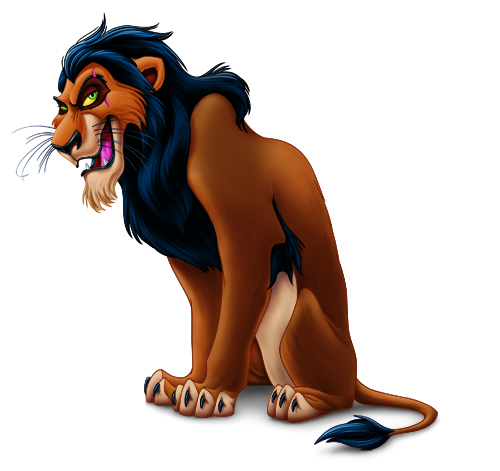
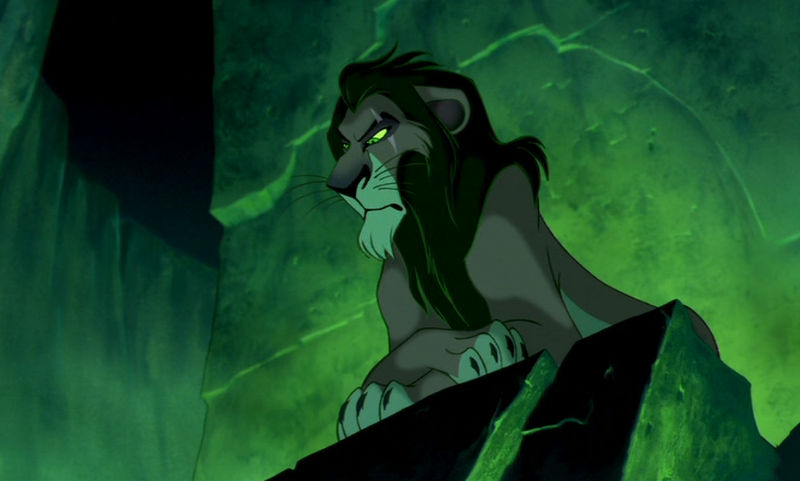
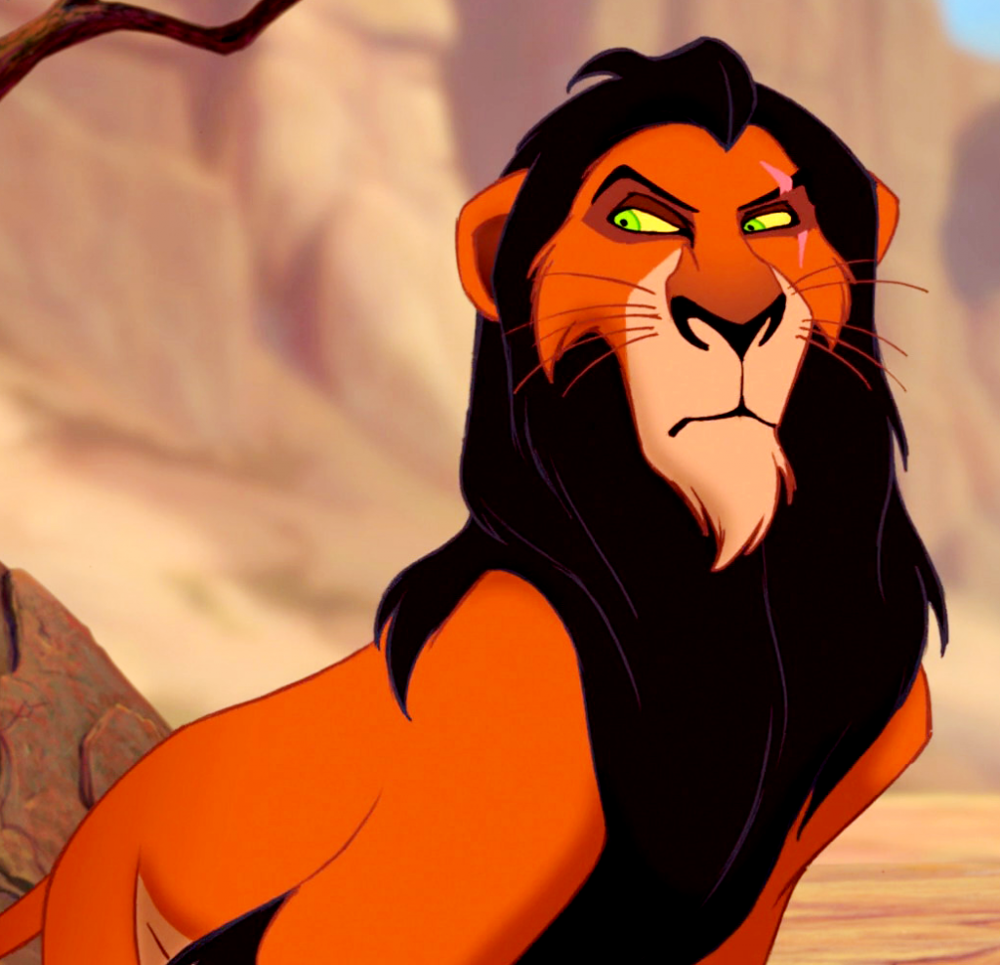
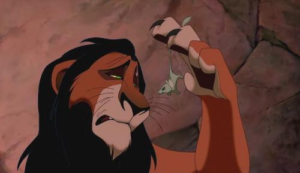

ШрамНавигация Шрам — младший брат короля-льва Муфасы и родной дядя его сына Симбы. Мечтой Шрама и его стремлением было занять место своего брата и властвовать над Землями Прайда; он, предположительно, всю жизнь ждал конца правления Муфасы и надеялся, что его сын умрёт при рождении. Но после появления Симбы на свет, восхождение Шрама на трон стало практически невозможным. В одной из первых сцен мультфильма он говорит пойманной на завтрак мыши: «Жизнь несправедлива, верно? Вот я, скажем, не могу стать королём…». Потеряв шанс взойти на трон сразу после ухода Муфасы и ревниво относясь к племяннику Симбе как к наследнику, Шрам задумывает убить последнего с его отцом.  Шрам подстрекает Симбу отправиться на опасную запретную территорию саванны — слоновье кладбище. Симба рассказал об этой территории Нале и вместе с ней отправился туда. Там Симбу ожидали трое гиен — Шензи, Банзай и Эд, которые являлись давними знакомыми Шрама и были с ним в сговоре. Но покушение на жизнь маленького принца терпит неудачу, поскольку ему на помощь приходит Муфаса и разгоняет врагов. Тогда Шрам вербует целую армию гиен, обещая им свободную жизнь и охоту на Землях Прайда, если они помогут ему убить Муфасу и Симбу, после чего королём станет он. При помощи Шензи, Банзая и Эда Шрам устраивает бегство антилоп гну в ущелье, где в этот момент находился Симба, и зовёт на помощь Муфасу: таким образом, Шрам хотел, чтобы стадо антилоп растоптало и Муфасу, и Симбу. Но в последний момент Муфаса вытащил своего сына из потока бегущих животных, а сам уцепился за скалистый склон. Когда Муфаса, карабкающийся по скале, умолял Шрама помочь ему, тот наклонился над ним и резко вцепился в его лапы когтями. Со словами «Да здравствует король.», Шрам скинул брата со скалы в поток гну, в котором тот и погиб. После этого Шрам внушил оставшемуся в живых, потрясённому и заплаканному Симбе, что тот виноват в смерти Муфасы, и велел ему бежать с Земель Прайда. Он приказал Шензи, Банзаю и Эду догнать Симбу и убить его. Однако Шрам не знал, что у гиен не получилось схватить наследника, и они решили, что тот сам погибнет в пустыне. Шрам, тем временем, вернулся на Скалу Предков и провозгласил себя новым королём, притворяясь, что он скорбит по потере короля и его сына.
  
Семья
Характеристика
Видео
|
|||||||||||||||||||||||||||||||||||